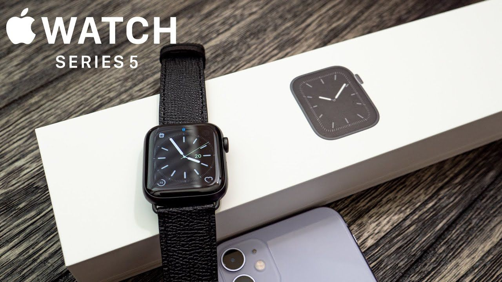

Shop now at the Apple Store online with many great ways to buy. Get free, no-contact delivery, Specialist help and more
Apple Watch Series 6
Apple Watch can do what your other devices can’t because it’s on your wrist. When you wear it, you get a fitness partner that measures all the ways you move, meaningful health insights and a connection to the people and things you care about most. And it’s always just a glance away.


Get help when you need it.
Apple Watch can detect if you’ve taken a hard fall and connect you with emergency services if you’re immobile.3 You can also get immediate help in an emergency — even when you’re travelling internationally — by pressing and holding the side button.
ECG on your wrist. Anytime, anywhere.
Only on Series 6
With the ECG app, Apple Watch Series 6 is capable of generating an ECG similar to a single-lead electrocardiogram.6 It’s a momentous achievement for a wearable device that can provide critical data for doctors and peace of mind for you.
Cellular helps you stay in touch with a tap.
Text, make calls and listen to music with ease. And with available cellular, you can do it all without your phone. It makes leaving your phone behind something you can do on purpose.
No more hide-and-seek with your phone.
Ever lost your phone while knowing it’s probably only a few metres away? Tap the Ping iPhone button and follow the sound, or touch and hold the button to flash the light on your iPhone. There it is, next to the pillow.
Glass front (Sapphire crystal), ceramic/sapphire crystal back, stainless steel frame,
SIM eSIM,
50m water resistant,
ECG certified (region dependent SW application; HW available on all models),
DISPLAY Type Retina LTPO OLED, 1000 nits (peak),
Size 1.78 inches, 10.0 cm2 (~60.0% screen-to-body ratio),
Resolution 448 x 368 pixels (~326 ppi density)
Protection Sapphire crystal glass,
Always-on display,
PLATFORM OS watchOS 7.0, upgradable to 7.5,
Chipset Apple S6,
CPU Dual-core,
GPU PowerVR,
MEMORY Card slot No,
Internal 32GB 1GB RAM,
SOUND Loudspeaker Yes,
3.5mm jack No,
COMMS WLAN Wi-Fi 802.11 b/g/n, dual-band,
Bluetooth 5.0, A2DP, LE,
GPS Yes, with A-GPS, GLONASS, GALILEO, QZSS,
FEATURES Sensors Accelerometer, gyro, heart rate (3rd gen), barometer, always-on altimeter, compass, SpO2, VO2max
Natural language commands and dictation (talking mode)
Ultra Wideband (UWB) support,
BATTERY Type Li-Ion 303.8 mAh (1.17 Wh), non-removable,
Charging Wireless charging,
Stand-by Up to 18 h (mixed usage)


Apple Watch Series 7

The Vogue Tracks Realising in Mid-September
The difference is like day and night.
watchOS 7 changes everything. You can make
the most of every waking moment with innovations
for watch faces. And your watch works the night shift with the Sleep app.
Watch Faces
Everything you do on Apple Watch starts with your
watch face. With watchOS 7, watch faces are more
customisable, powerful and discoverable than ever.
Faces to make your own
From fun to functional, there is a wide variety of watch faces to try. And there are more ways of customising faces with colours and complications than ever before.
More from every app
One app can now offer many complications, so you can create the ultimate face for anything. If you’re a surfer, you can get the swell size, water temperature and wind speed from a single app.
Powerful complications
One tap toShortcuts, Sleep, Camera Remote, Moon Phase, World Clock
Shortcuts.
Sleep.Camera Remote.Moon Phase.World Clock.Replay
Face Sharing
Share faces you’ve created by texting, emailing or posting a link online.
Pause Animation of Apple Watch Face Sharing
Pause
Find faces in the App Store
Whatever you’re into, the App Store editorial team has expertly curated faces in store for you.
Get faces online
Discover faces that reflect your interests on websites and social media. Add them to your watch.
Sleep is one of the most important aspects of your health, but also one of the least understood. Tracking is a good start, but the Sleep app goes further. It helps you create a schedule and a bedtime routine so you can meet your sleep goals.
See a sleep analysis chart every morning showing how much you’ve slept in the past week.
Sleep tracking
Apple Watch uses its accelerometer to notice the subtle movements associated with breathing and differentiate between sleeping and waking states.
Wind Down
Wound up? Wind Down assists you in establishing a bedtime routine with shortcuts that help you relax, like opening a meditation app and dimming your lights.
Wake Up
Start your morning with a weather report and your battery level. If you get up before your alarm, you’ll be asked if you want to turn it off.

Apple Watch Series 5


The new Series 5 runs on a new Apple S5 chip inside: 64-bit dual-core S5 processor, up to 2x faster than S3 processor (includes W3 wireless chip). Apple Watch bands now include purchasable gold options including leather straps, something we haven’t seen since the original. The Series 5 includes 32 GB storage, up from 16 GB from previous models. Apple continues to see industry-leading growth in the wearables business, thanks in large part to the continued success of its so-called “Hearables” products. According to new data from IDC, Apple shipped 23.7 million AirPods and Beats products during the second quarter of 2020.
Apple Watch Series 4


Glass front (Sapphire crystal), ceramic/sapphire crystal back, stainless steel frame,
SIM eSIM,
50m water resistant,
ECG certified (region dependent SW application; HW available on all models),
DISPLAY Type Retina LTPO OLED, 1000 nits (peak),
Size 1.78 inches, 10.0 cm2 (~60.0% screen-to-body ratio),
Resolution 448 x 368 pixels (~326 ppi density),
Protection Sapphire crystal glass,
3D Touch display,
PLATFORM OS watchOS 5.0, upgradable to 7.5,
Chipset Apple S4,
CPU Dual-core,
GPU PowerVR,
MEMORY Card slot No,
Internal 16GB 1GB RAM,
CAMERA No,
SOUND Loudspeaker Yes,
COMMS WLAN Wi-Fi 802.11,
Bluetooth 5.0, A2DP, LE,
GPS Yes, with A-GPS, GLONASS, GALILEO, QZSS,
The Apple Watch is not just a niche smartwatch anymore. In fact, Apple claims it's the most popular watch — smart or otherwise — in the world. The Series 4 is the latest generation of this product line, and it adds several features that sound great on paper. This includes the ability to take ECG readings, fall detection, larger and better displays that go all the way to the edge, and an improved heart rate sensor.
Apple Watch Series 3


Build Glass front (Sapphire crystal), ceramic/sapphire crystal back, stainless steel frame,
SIM eSIM,
50m water resistant,
DISPLAY Type Retina OLED, 1000 nits (peak),
Resolution 390 x 312 pixels (~303 ppi density),
Protection Sapphire crystal glass,
3D Touch display,
PLATFORM OS watchOS 4.0, upgradable to 7.5,
Chipset Apple S3,
CPU Dual-core,
GPU PowerVR,
MEMORY Card slot No,
Internal 16GB 768MB RAM,
CAMERA No,
SOUND Loudspeaker Yes,
COMMS WLAN Wi-Fi 802.11,
Bluetooth 4.2, A2DP, LE,
GPS Yes, with A-GPS, GLONASS,
FEATURES Sensors Accelerometer, gyro, heart rate, barometer,
Natural language commands and dictation (talking mode),
BATTERY Type Li-Ion 341 mAh, non-removable (1.34 Wh),
Charging Wireless charging,
Stand-by Up to 18 h (mixed usage),
MISC Colors Space Black, Silver,
Models A1860, A1861, A1889, A1891, A1890, A1892
ust as Apple's iPhone revolutionized the smartphone industry, Apple's Watch is changing the watch that millions of people wear, from office workers to fitness buffs to retirees. The Apple Watch is designed to help people stay connected, active, and motivated, and it boasts an industry-leading customer satisfaction rating of 97% worldwide.
Since the launch of the Series 2 device, Apple Watch has experienced significant growth. Apple CEO Tim Cook reported at the company's September 2017 special event that the Apple Watch grew over 50% last quarter compared to the previous year. Cook further confirmed that the Apple Watch has become the world's number one watch.